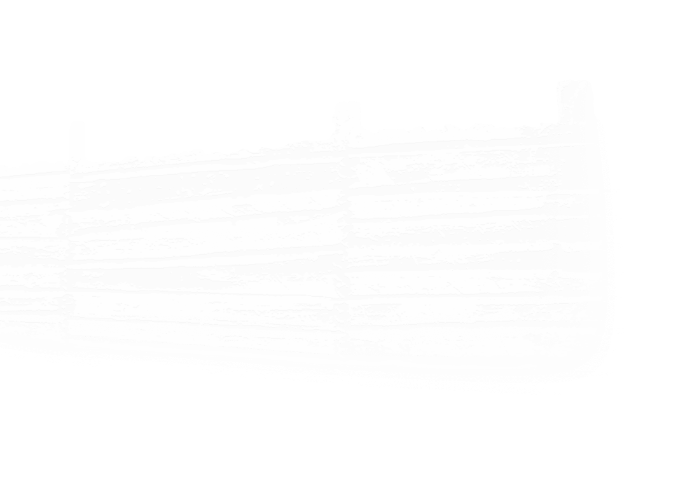
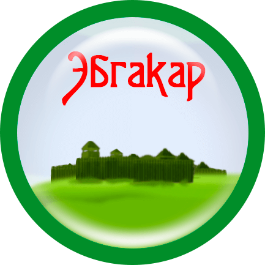

Младший сын Донды батыра, Зуй, имел удел по реке Пызеп. Был женат на красавице Эбге.
×
Краснослудское (Эбгакар) городище археологический памятник северных удмуртов конца I тыс. н. э. Располагается в 1,5 км. От деревни Нижняя (Красная) Слудка Глазовского района вниз по течению реки Чепцы (правый берег). Площадка размером 2600 м занимает небольшой мыс, укрепленный двумя валами. Наружный вал сохранился не полностью находится на расстоянии 30 м. от внутреннего, длина его 42 м и высота до 2 м. Культурный слой на площадке достигает толщины 70 см и распространяется также за ватами, где, как и на площадке, находили разные вещи. Из списка с дозорных книг воеводы князя Фёдора Андреевича Звенигородского, Василия Терентьевича Жемчужникова и дьяка Михаила Ординцова в 1615 году можно обнаружить такое название, как «погост на Красной Слудке в составе Карийского стана Хлыновского уезда. Селение относится к древнейшим на Чепце; вблизи деревни находится городище Эбгакар». ЭБГАКАР - название горы с городищем. Эбга - воршудно-родовое имя - кар 'гнездо; городище, город'; 'городищерода Эбга'. Воршудно-родовое объединение, с именем которого связано название деревни и городища, относится к коренным чепецким. Нигде в других регионах, кроме Глазовского района, воршуд Эбга не встречается. Вот и осталось русское название Слудка, а удмуртское Эбга. Со временем деревня разрасталась, росли дети, женились, стало тесно, поэтому некоторая часть населения перебралась на новое место. Основали две деревни Слудки - Выль Эбга (Верхняя Слудка) и Вуж Эбга (Нижняя Слудка). Легенда о происхождении названия городища гласит, что умная и красивая девушка Эбга была проклята Донды-батыром жить в сырых и тёмных подземельях Эбгакара. Раз в год она выходила оттуда на старую ветвистую ель в одном белье, которое просушивала здесь от сырости. В настоящее время городище Эбгакар является объектом археологического наследия и находится под охраной государства. Из книги: В краю Донды-батыра: достопримечательности Глазовского района: сборник краеведческих материалов / [сост. З. П. Перминова; Муниципальное учреждение культуры "Глазовская централизованная библиотечная система" муниципального образования "Глазовский район"]. - Глазов: ООО "Центр-сервис", 2014. - 68 с.: фото.